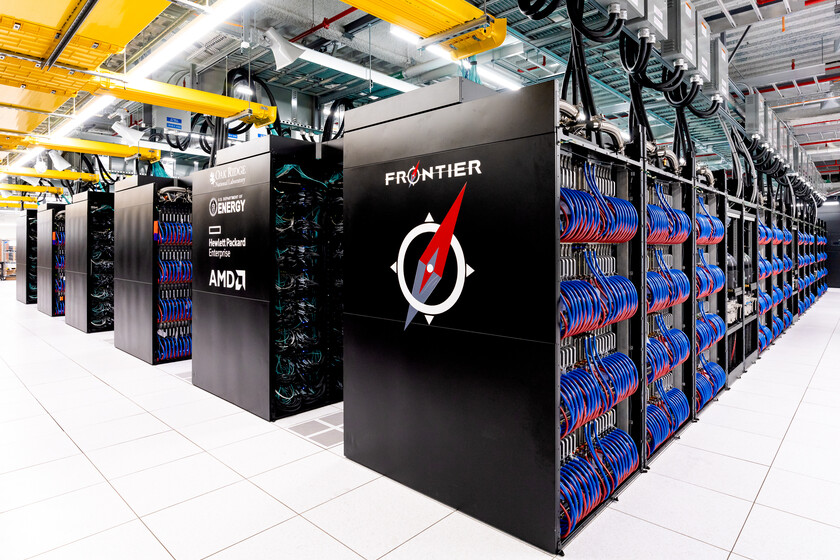
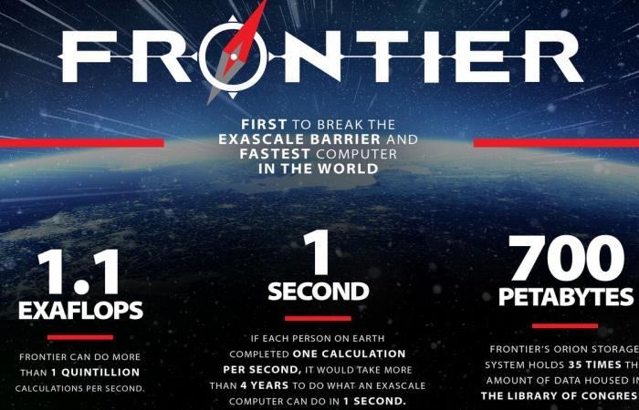

January, 09 2023
Linux
World’s fastest supercomputer runs SUSE Linux
Looking back at 2022, certainly one of the most dramatic leaps forward in the compute world was a supercomputer breaking the exascale barrier, meaning it can process more than a quintillion calculations per second — making it capable of performing the most complex computing tasks in the world and setting the stage for breakthroughs in climate modeling, astrophysics, genomics, medicine and a more efficient energy grid, just to name a few.
This supercomputer, dubbed Frontier, was developed by HPE Cray in concert with the US Department of Energy’s Oak Ridge National Laboratory. Maybe the most impressive aspect of Frontier, from a raw compute perspective, is how it measures up to previous “fastest” supercomputers. It’s really not even close as Frontier checked in at 2.5x faster than the world’s previous number 1 supercomputer!
SUSE’s partnership with HPE Cray dates back to the early 1990s, pre HPE’s acquisition of Cray, and the entire time SUSE has been collaborating on Cray OS – a specialized version of SUSE Linux Enterprise Server. Working together, we’ve created a specialized low-jitter OS enhanced for high performance computing that is particularly small in footprint. And HPE Cray OS includes reliability, availability and serviceability (RAS) features such as services to verify compute nodes run efficiently with integrated performance testing and hardware reporting. Integrated node health service means users can validate compute nodes prior to application launch to help maximize use of available resources.
Another impressive aspect to note is these specialized enhancements do not alter the ability of Frontier and HPE Cray OS to run standard Linux applications, but rather enhance it for performance, scale, and reliability. The HPE Cray OS software suite offers integrated container support for more flexibility and many ISV applications are able to be deployed to run on Frontier “out of the box”.
A third characteristic of Frontier that’s extraordinary is it also claimed the number 2 spot on the Green500 list in June of this year, which rates energy use and efficiency by commercially available supercomputing systems, with 62.68 gigaflops performance per watt … with its sister system, the Frontier Test & Development System (TDS), claiming the number 1 spot.
SUSE Linux Enterprise Server and the newer SUSE Linux Enterprise Micro version run “under the covers” as the embedded OS for many other systems and devices of which you may not be aware. My daughter was thrilled to send me a picture of a Linux Point of Service-powered terminal deployed at a well known grocer where she works saying “You never told me SUSE runs our cash registers!”.
From supercomputers to terminals to medical devices, SUSE Linux Enterprise is the choice of many leading manufacturers world wide. Not to mention the cloud native innovations at the edge with Rancher Prime and K3s coming to the forefront with companies like Home Depot.
Now that you know, if you’re interested in working with SUSE and our expert team to make leaps forward in your offering, whatever that may be, don’t hesitate to reach out at EMBEDDED@SUSE.COM. We’d love to work with you to make great things happen.